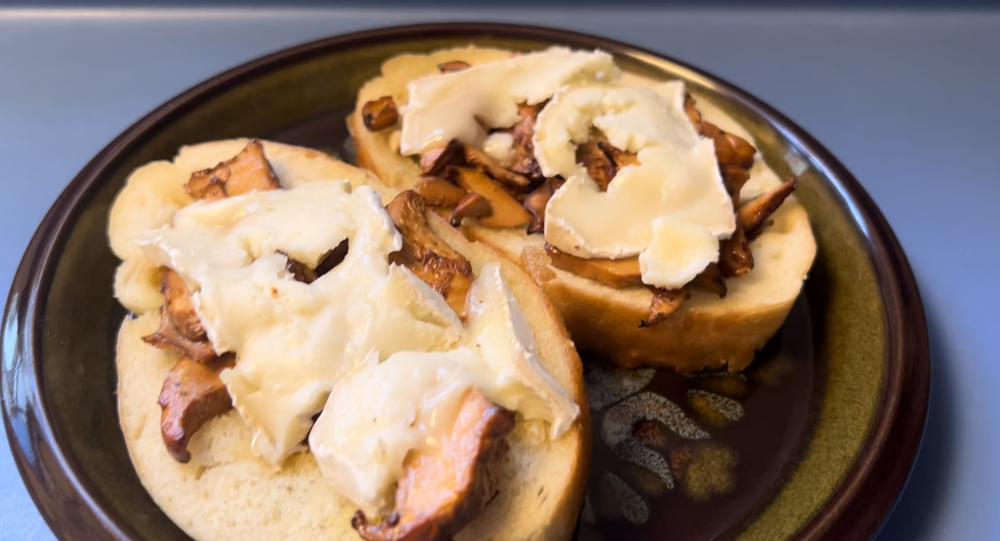

Chanterelle Toast

A simple breakfast toast with chanterelles and brie cheese. Fancy and decadent. Not so simple if you include
mushroom foraging as part of the process.
Ingredients
- butter
- bread
- chanterelles
- brie cheese
Steps
- Slice your chanterelles (make sure you have picked real chanterelles).
- Heat a skillet and cook your chanterelle slices.
- Toast bread with a bit of butter on it.
- Put brie and chanterelles on the toasted bread.